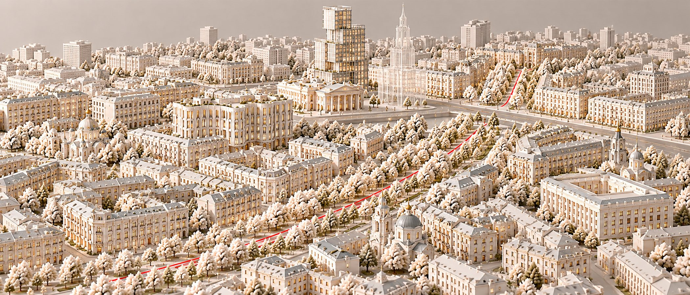
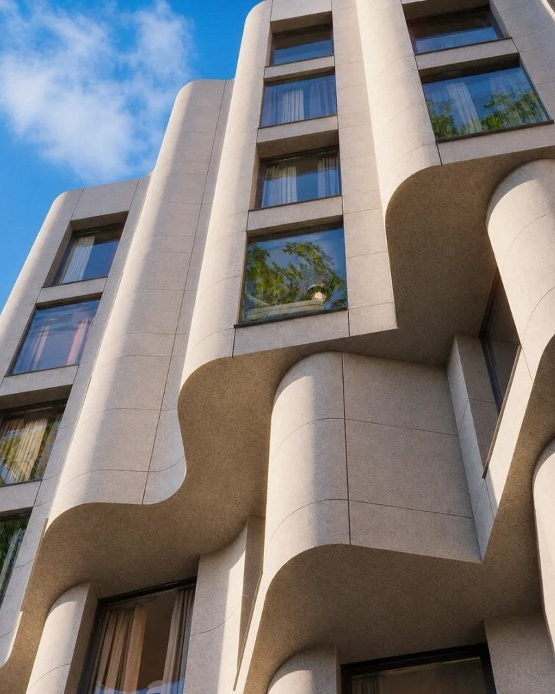
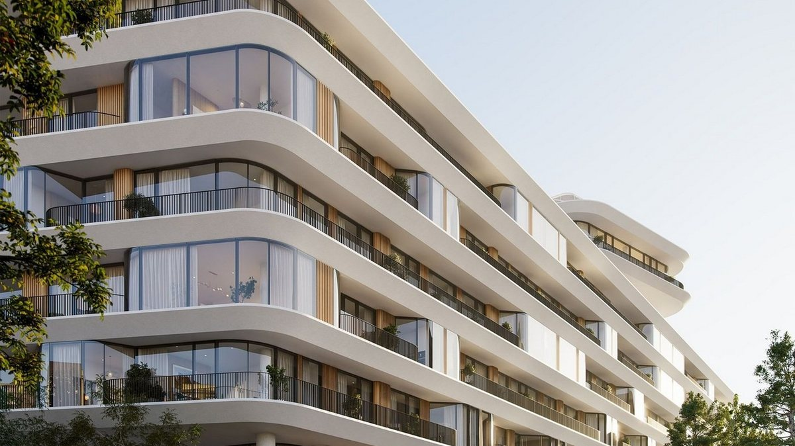

Район · перепроверено 11 октября 2026
Сретенка и Цветной бульвар
На заметку: у Сухаревской и на Сретенке новый метр дороже, чем на Пресне, в Дорогомилове, на Чистых прудах и в Китай-городе, — медиана у застройщиков 2,40 млн. Но продаются они медленно: в Форуме и Тургеневе большинство лотов висят дольше полугода. А средние цены двух районов, на стыке которых стоит Сретенка, о конкретном переулке почти ничего не говорят.

Откуда цифры
Два района, пять калькуляторов
| Кто считал | Что считал | Цена метра |
|---|---|---|
| «Инком-Недвижимость», сентябрь 2026 | всё вторичное жильё Мещанского района | 493 тыс ₽ |
| «Инком-Недвижимость», июль 2026 | всё вторичное жильё Красносельского района | 458 тыс ₽ |
| bnMAP.pro, сентябрь 2026 | все новостройки: Мещанский и Красносельский | 2,3 млн ₽ и 1,4 млн ₽ |
| «Метриум», II квартал 2026 | элитные новостройки Мещанского района | 2,27 млн ₽ |
| NOTA, ЦИАН 10 октября 2026 | 8 домов разбора: вторичка и лоты застройщиков | вторичка — 1,58 млн ₽, у застройщиков — 2,40 млн ₽ |
Сретенка — граница двух районов: Цветной бульвар и Сухаревская — Мещанский, Костянский и Пушкарёв переулки — Красносельский. По bnMAP новостройки Красносельского в 1,6 раза дешевле, но самый дорогой новый дом района — Тургенев в Костянском переулке. Средняя по району про конкретный переулок не говорит.
Красная линия
Семь вещей, на которые здесь стоит смотреть
| Что | Как здесь |
|---|---|
| Место | Сухаревская площадь, переулки Сретенки, Цветной бульвар и Каретный ряд. У застройщиков: Сретенка — 3,19 млн за метр, Сухаревская — 2,40. |
| Бульвары | Цветной бульвар проложен на месте реки Неглинной, которую убрали под землю. От Форума до сквера на Цветном бульваре — 363 метра. |
| Дом | От доходного дома Клейна 1899–1902 годов и электротеатра 1914 года до новых домов с ключами в 2027 году. |
| Соседи | Дома маленькие: 10 резиденций в Lion Gate, 15 квартир в Пушкарёве 12, 46 в Форуме. Самый большой — Тургенев, 118 квартир. |
| Паркинг | В Форуме 1,67 машиноместа на квартиру, в Тургеневе — 1,42, в Phantom — 1,29. В Цвете 32 — 0,70 на апартамент. |
| Витрина | В Форуме 12 лотов застройщика из 14 висят дольше полугода, в Тургеневе — 11 из 15. У Lion Gate и Пушкарёва 12 объявлений нет. |
| Сценарий | Жизнь пешком: бульвары, Сретенка, Садовое кольцо. Пушкинская школа № 1500 — в двух минутах от Пушкарёва 12 и в четырёх от Тургенева. |

Дом месяца
Phantom
Три корпуса бюро DROO у Малой Сухаревской площади, 103 квартиры, двор-сад. У Sense 51 лот: однокомнатная 67,5 м² — от 135 млн, четырёхкомнатная — от 579,6 млн. По нашему паспорту — отметка с одним минусом: 1,29 машиноместа на квартиру при норме класса 1,5. Новый дом здесь продаётся быстрее готового: медиана объявления — 32 дня против 403 у Форума.
На этой площади до 1934 года стояла Сухарева башня. С 1701 года в ней работала Школа математических и навигацких наук — одна из первых светских технических школ Москвы.

Без отметки
Три места, где район не проходит собственную линию
Тургенев
Самый дорогой метр у застройщиков в районе — 3,19 млн, продают как элиту. По нашей мерке — премиум: 118 квартир, потолки 2,8 м, 1,42 машиноместа на квартиру. 11 лотов из 15 висят дольше полугода.
Форум
Сдан весной 2026 года, но 12 лотов из 14 у застройщика висят больше полугода, медиана 403 дня. Две квартиры собственников — на 22 % дешевле застройщика.
Пустая витрина
Lion Gate и Пушкарёв 12 — ни одного объявления, Depre Loft — одно. Цену в самых камерных домах района приходится спрашивать напрямую.
Чего мы не нашли
Цен сделок по району нет в открытом доступе — только цены предложения. Медианы по улицам мы посчитали сами по объявлениям ЦИАН, и выборки здесь маленькие: на вторичке всего 15 объявлений. У Lion Gate и Пушкарёва 12 нет даже цен предложения.
Обложка сгенерирована для NOTA. Источники: «Инком-Недвижимость», bnMAP.pro, «Метриум» — в пересказе РБК Недвижимости (июль — сентябрь 2026); ЦИАН — выгрузка NOTA 10 октября 2026; база NOTA — паспорта домов; наш.дом.рф — число квартир и застройщики, сверка 11 октября 2026; novostroy-m.ru, elitnoe.ru и сайты застройщиков — характеристики домов; Музей Москвы — история Сухаревой башни.